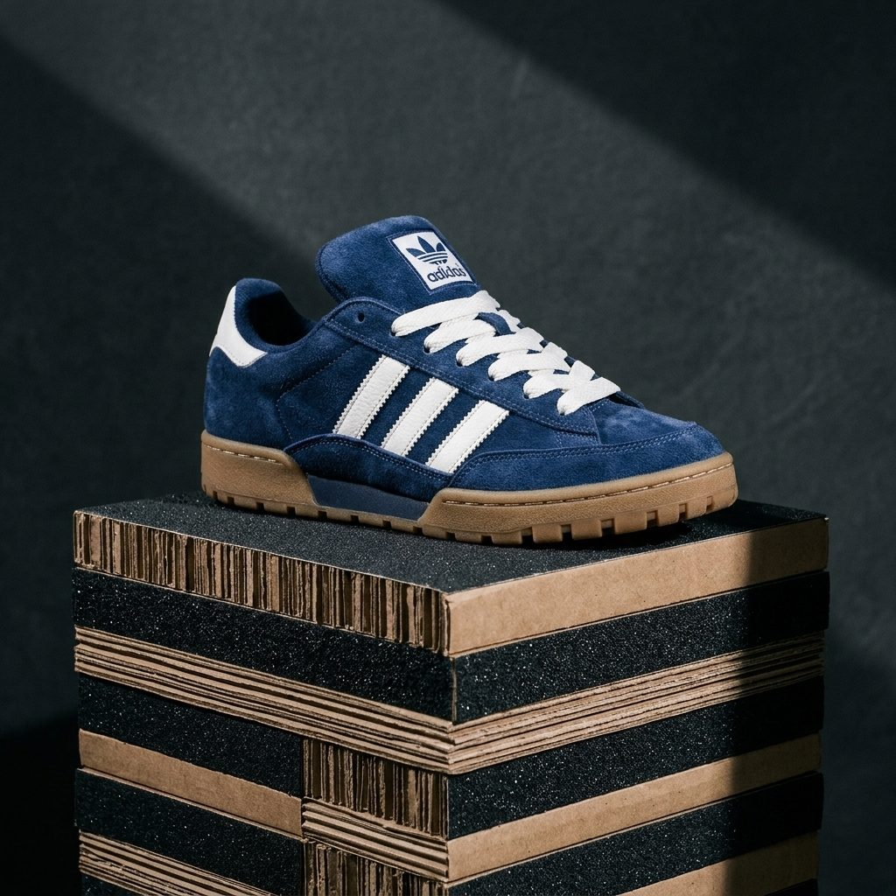
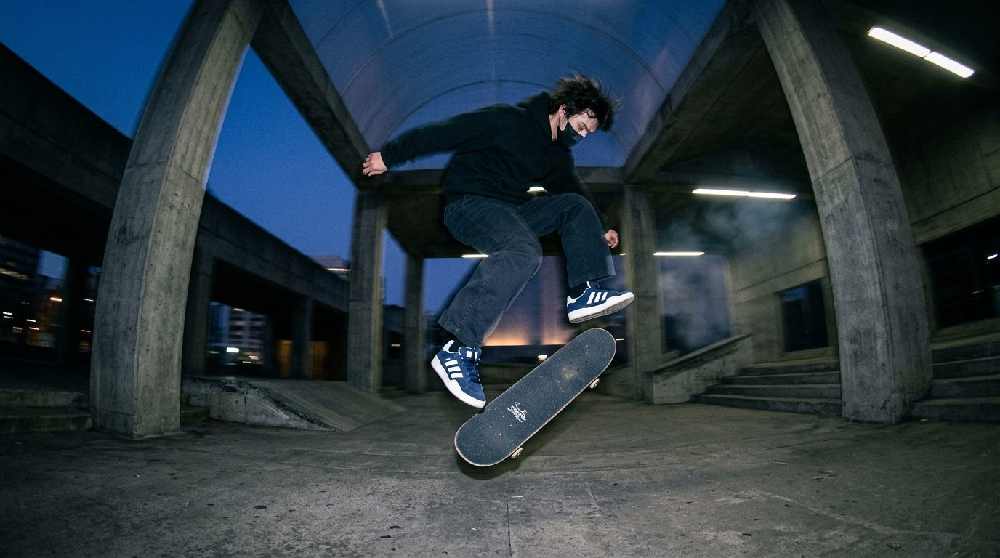
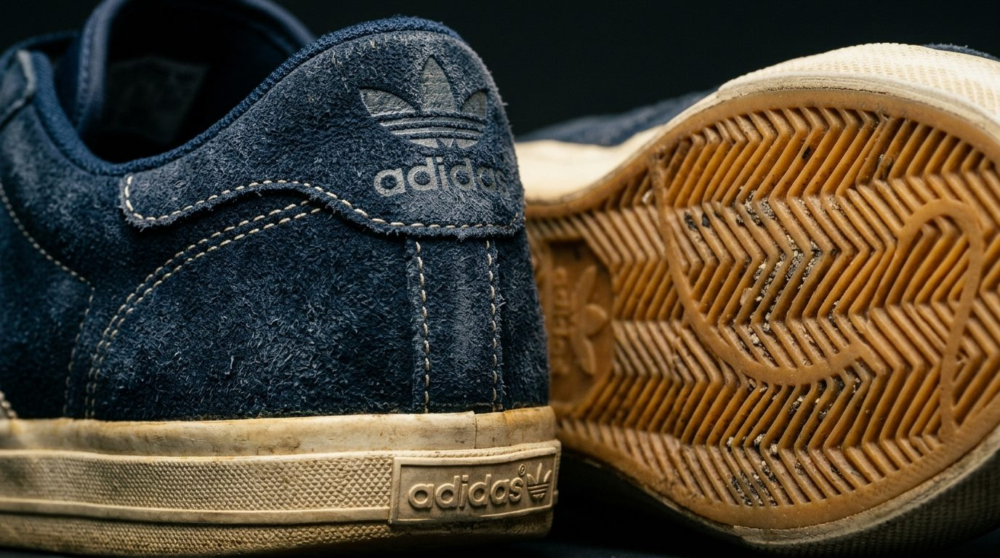

ESCULTURA EM CAMURÇA MARINHO
O tênis repousa sobre camadas alternadas de papelão kraft reciclado e lixa de skate preta de alta granulação, banhado por luz direcional de galeria.
A silhueta cultuada das pistas dos anos 90 reconstruída em pureza arquitetônica bruta: camurça marinho pesada de 2.4mm, cupsole knurled vulcanizado e proporções autênticas da era vert.
Toque nos pads abaixo para sintetizar fisicamente em tempo real as frequências do skate: estalo de madeira maple, atrito da cantoneira e centrifugação dos rolamentos.
Quatro perspectivas capturadas com direção de arte contemporânea para dissecar a biomecânica e textura do Adidas Ramp 90s.

O tênis repousa sobre camadas alternadas de papelão kraft reciclado e lixa de skate preta de alta granulação, banhado por luz direcional de galeria.

Transição aérea no concreto cru. A robustez da silhueta dos anos 90 garante máxima estabilidade onde o skate encontra a arquitetura.

Sulcos em espinha de peixe na borracha vegetal crua, costuras duplas com fio de nylon marítimo e o Trefoil estampado a quente no calcanhar.
As três listras brancas serrilhadas em couro nappa puro sobre a base de camurça azul profundo. A proporção volumosa original de 1994 preservada.
Desenvolvido para suportar lixa abrasiva grau 80, gaps de concreto e anos de atrito ininterrupto.
Camurça suína Wolverine tratada com nanotecnologia hidro-repelente. Resiste 3x mais ao atrito contínuo do ollie do que o suede comercial padrão.
Composto de borracha vegetal crua natural moldada em duas densidades. Laterais recartilhadas para proteção lateral e base flexível de alto grip.
Língua e colarinho acolchoados clássicos dos anos 90 com espuma de memória de célula fechada. Trava os ossos do tornozelo impedindo torções.
Cadarços planos de 16mm em algodão pesado com ponteiras de alumínio fosco prensadas a frio. Passadores embutidos que protegem os laços da lixa.
A maioria das reedições comete o erro de romantizar o passado com materiais estéreis e plásticos. O Adidas Ramp 90s rejeita essa ilusão. Ele não é uma cópia barata; é um fóssil vivo da era de ouro do vert.
Criado em 1994, quando os tênis eram ferramentas brutas esculpidas para suportar a lixa e o granito das praças públicas. Trazer o Ramp de volta é reafirmar que a forma serve à função extrema.
Cada costura, cada milímetro de camurça marinho e a densidade da borracha foram restaurados com fidelidade cirúrgica a partir dos moldes originais arquivados em Herzogenaurach.
Lote rigorosamente limitado a 1.000 pares numerados mundialmente. Cada caixa acompanha bloco de lixa de arquivo e certificado holográfico.